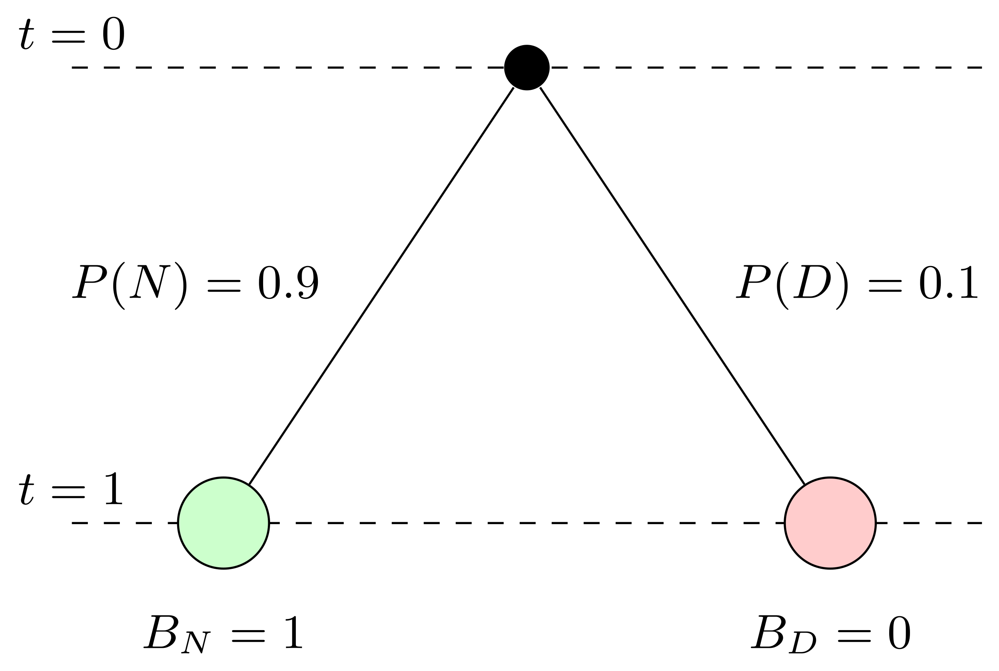
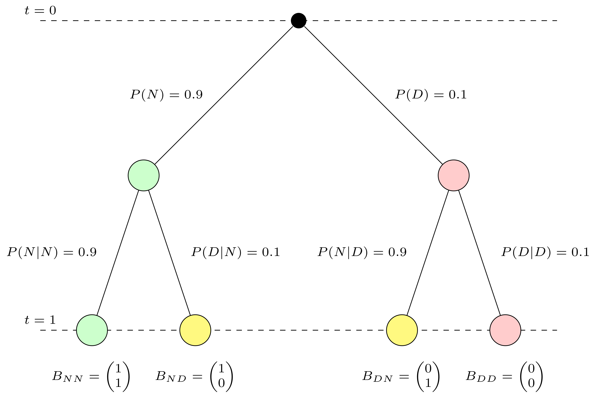
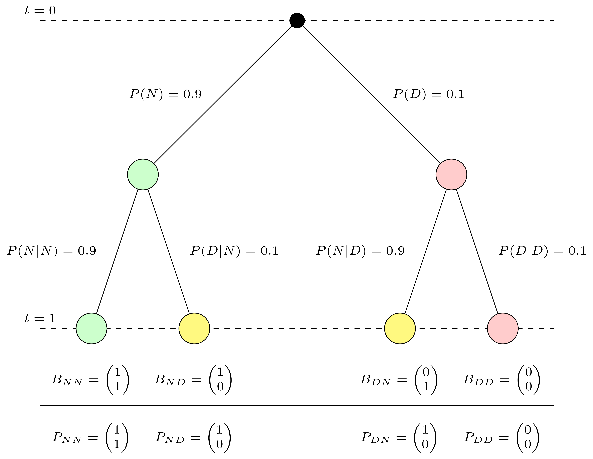
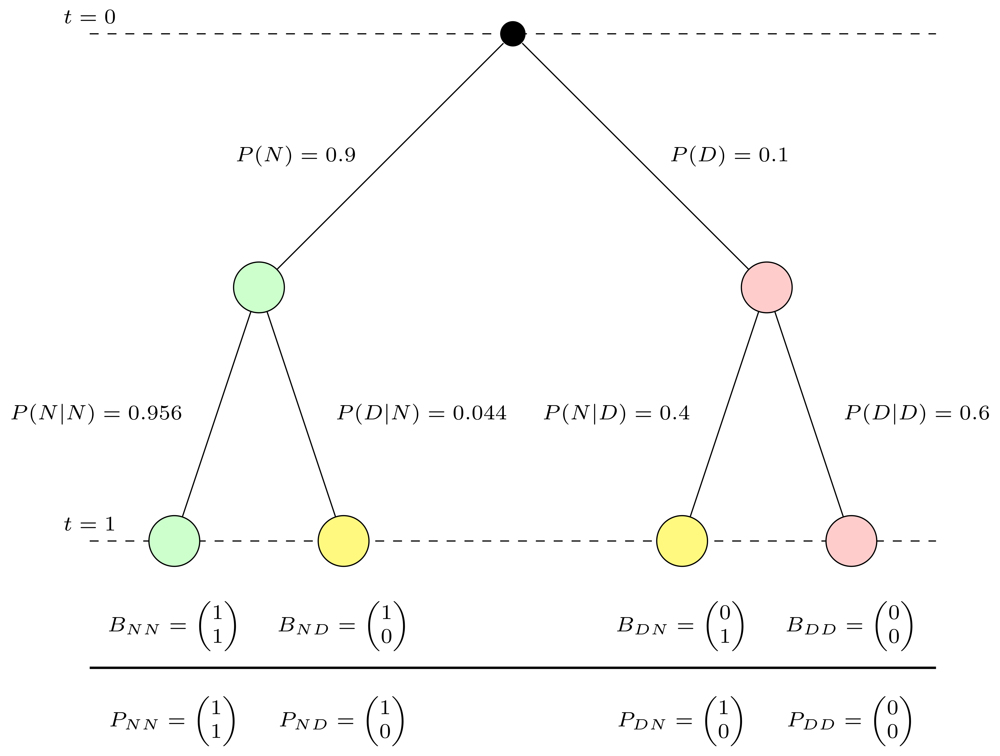

3 Conditional Probability
In this lecture we are going to discuss the concept of conditional probability. The notion of conditional probability is a basic tool of probability theory which has particular relevance in Finance. The ideas of conditional probability are very simple but often obscured by a clumsy terminology.
To intuitively appreciate the significance of conditional probability first, let us start with a simple but striking scenario from the world of finance. Imagine you are an investor trying to evaluate the safety of a bond portfolio. On paper, the bonds are rated highly by reputable agencies, and the portfolio looks diversified—a dream investment. However, during a global recession, a few defaults occur, and to your surprise, the entire portfolio begins to unravel, causing significant losses. How could this happen?
This seemingly safe portfolio turned risky because it underestimated the connections between events—a core idea tied to conditional probability. Conditional probability helps us analyze how the risk of one event changes given another has occurred. It enables us to model dependencies, a critical factor in real-world scenarios, particularly during financial crises.
Understanding these relationships isn’t just an intellectual exercise—it’s crucial for preventing catastrophic losses. Whether you’re pricing complex financial instruments, assessing credit risk, or making investment decisions, mastering conditional probability allows you to account for interconnected risks and avoid misleading conclusions based on oversimplified assumptions.
3.1 Why neglecting conditional probability may be expensive: A case study.
With this motivation in mind let us turn to a historical example that demonstrates the importance of understanding conditional probability: the financial crisis of 2007-2008. This crisis revealed how wrong assumptions about independence and neglect of dependence in events and conditional probabilities can lead to systemic failures in structured finance.1
1 See Tooze (2018): For an engaging and comprehensive exploration of the great financial crisis of 2007 - 2008 and its causes and aftermath. It is highly recommended for deeper study.
To understand the real world aspects of this example it is necessarry to understand some basic ideas of structured finance and the engineering of specific risk profiles from a portfolio of risky securities in the first place. I will explain the finance context with a simple and stylized example and then discuss how understanding conditional probability may help us to make better financial decisions.
3.1.1 Bonds and Credit Risk
A bond is a financial instrument where the issuer agrees to pay the holder a specific amount, the face value or par value, at maturity. Bonds are widely used as fixed-income securities but carry the risk of default if the issuer faces financial difficulties.
To quantify this risk, bonds are rated by agencies such as Moody’s and Standard & Poor’s. Investment-grade bonds are considered low-risk, while speculative or “junk” bonds are riskier and more likely to default. Here is a summary of their rating schemes and what the ratings mean in words:
| Rating Category | Moody’s | Standard & Poor’s |
|---|---|---|
| High grade | Aaa | AAA |
| Aa | AA | |
| Medium grade | A | A |
| Baa | BBB | |
| Speculative grade | Ba | BB |
| B | B | |
| Default danger | Caa | CCC |
| Ca | CC | |
| C | C | |
| D |
3.1.2 Pooling and Tranching: The Innovation
Structured finance emerged in the early 2000s as a way to manage risk through pooling and tranching. By pooling risky assets and dividing cash flows into “tranches” with distinct risk profiles, financial engineers created new bonds, including investment-grade securities, from portfolios of bonds which individually would be rated as speculative grade or junk bonds. A major product of this innovation was the mortgage-backed security (MBS). Many other products were then invented using similar financial engineering ideas.
Let us develop an intuitive understanding of structured finance and its relation to probability through a simplified example, which I learned from Karl Schmedder’s course.2
2 See https://www.coursera.org/learn/introductiontoprobability
3.1.3 A Simple Event Tree for One Bond
Consider a single bond you can own today that pays €1 at maturity at some point in the future. Time is often abbreviated as \(t\) and the points in time are symbolized by letting \(t\) take different values like \(t=0\) for today and \(t=1\) for a future point in time, say a year from today.
This bond has a 10% chance of default, meaning there is a 90% chance it will not default. With a default probability of 10%, this bond would likely receive a speculative grade rating, such as ‘B’ or ‘B-’ in the rating tables presented earlier. This poor rating reflects the significant risk of non-payment associated with such a bond, which could deter risk-averse investors and highlight its ‘junk’ bond status. The payoff is structured as follows:
- If the bond does not default (\(N\)), the payoff is €1.
- If the bond defaults (\(D\)), the payoff is €0.
This situation can be graphically represented as a simple probability tree of Figure 3.1
The graph above visualizes the outcomes of a single bond. Each node represents a possible state of the bond at different times:
- \(t=0\) is the starting point.
- \(t=1\) No Default \(N\) occurs with a probability of \(P(N) = 0.9\).
- \(t=1\) Default \(D\) occurs with a probability of \(P(D) = 0.1\).
You could see this in analogy to the toss of a coin with the difference that both sides of the coin show with different probability. With this analogy - using the concepts of the last two lectures - you can understand the bond in probabilistic terms as a random experiment with a sample space consisting of two basic outcomes, \(N\) and \(D\) with given probabilities \(P(N)\) and \(P(D)\).
3.1.4 Combining Two Bonds with Independence Assumption
We now combine two such bonds into a portfolio. The assumption of independence implies that the defaults of these bonds occur independently of each other. This means that the default of one bond has no influence on the probability of the other bond defaulting. Under the assumption of independence you would treat the default probability of one bond as unconnected with the default probability of the other.
While this assumption simplifies calculations, it was historically used by financial engineers to justify creating tranches from risky portfolios. The reasoning was that diversification reduces the likelihood of joint defaults, making some tranches appear safer.
At the time, financial engineers relied on historical data and market conditions to argue for this independence. Defaults were often uncorrelated under normal economic conditions, and diversification was seen as a proven strategy for mitigating risk. For example, if bond defaults were driven by isolated events (such as company-specific issues), the assumption of independence seemed reasonable. Moreover, the packaging of diverse assets from different industries into portfolios strengthened the appearance of safety, as individual economic shocks were less likely to affect the entire portfolio simultaneously.
However, this reasoning neglected systemic risks. During economic downturns or financial crises, defaults often become highly correlated due to shared macroeconomic pressures, such as declining housing markets or credit tightening. For instance, in the lead-up to the 2008 financial crisis, rising mortgage defaults were driven by broader economic factors that impacted many bonds simultaneously. With this in mind it would be not plausible to assume that bonds can be stacked together in a portfolio without the default risks of one being not pushed up by the default risk of others.
Even without the formal use of probability theory, financial engineers could have questioned whether diversification truly guaranteed independence in the context of systemic risks.
The idea that junk plus junk could be transformed into investment-grade bonds through pooling should have raised skepticism. Careful critical thinking—considering broader economic dependencies—would have revealed that this transformation was too good to be true. By ignoring these dependencies, financial engineers failed to see how small cracks in the system could cascade into systemic failures.3
3 A famous voice at the time warning about the flawed reasoning was Raghuram Rajan, former chief economist of the International Monetary Fund. He warned that rather than reducing risk through diversification, CDOs and other derivatives spread risk and uncertainty about the value of the underlying assets more widely.
But let us not jump ahead and try to see how the tree for two bonds looks like when we assume independence in Figure 3.2.

The outcome of combining two bonds can be represented as a double event tree, showing all possible combinations of defaults and no defaults at \(t=1\). Let me unpack this more complex tree for you.
Since we have a portfolio of two bonds, instead of one as before, we have now two event trees combined. Since we have to take into account all of the possible combinations of basic outcomes this means that we have to attach a new bond event tree to each outcome of the initial tree.
Note the time index. In the example the realizations of basic outcomes for the portfolio happen simultaneously. So the walk from the origin to the end of the tree along a path is taking place in one time step and only the outcomes at \(t=1\) are observed.
At the edges we write the probability of the outcomes. For example \(P(N)\) is the probability of the first bond (represented by the upper tree) is not defaulting whereas \(P(D)\) denotes the probability of the bond not defaulting. The assumption of independence is hidden in this tree by modelling the probabilities of \(N\) and \(D\) for the second bond in exactly the same way no matter whether the first bond defaults or not. It is modelled in anaology to the toss of two fair coins. The probability of the second coin showing Heads is \(1/2\) no matter whether the first coin shows Heads or Tails.
At the end of the tree we have written the outcome of each path in the notation \[\begin{equation*} B_{\text{state of bond 1 at} \, t = 1 \, \text{state of bond 2 at} \, t=1} = \binom{\text{payoff of bond 1 at } \, t= 1}{\text{payoff of bond 2 at } \, t = 1} \end{equation*}\] So, for example, \(B_{NN} = \begin{pmatrix} 1 \\ 1 \end{pmatrix}\) means that bond 1 does not default and bond two does not default (\(B_{NN}\)). Bond 1 has in this case a payoff of 1 and bond 2 also has a payoff of 1.
3.1.5 Pooling and Tranching
When you look at this portfolio under the independence assumption there seems to be room for re-engineering the risk profile of this portfolio. In all outcomes but in the one where both bonds default you can guarantee a payoff of 1. There remains an adverse outcome, where both bonds default in which case you can’t pay out anything. But under the assumption of independence this risk is small. The probability of this event - remember our treatment of independent events in the first lecture - would be: \(P(D) \times P(D) = 0.1 \times 0.1 = 0.01\). Pretty low, actually. For example assume that the probability of default refer to the probability of the bond defaulting over a year, the usual time frame taken in ratings, this would be a one in a hundred years event. In \(99%\) we would get a sure payoff of 1. So under this restructuring the first restructured bond would qualify as an investment grade bond.
So this is the idea. We pool the payoffs of both securities and define two new securities by changing their payoff profile. The first one pays always 1 except when both bonds default in which case this bond pays 0. The other one will always pay 0 except in the case where both bonds do not default. This is under independence an event with probability \(P(N) \times P(N) = 0.81\). Rember the complementarity rule? This says that the second restructured bond will thus have a default probability of \(19\) % instead of \(10%\) it would be speculative grade or close to toxic junk now.
Here is picture how you can visualize this piece fo financial magic. This picture can be read in exactly the same way as the previous picture. There is only one additional element. We have written the payoff of the original bonds by \(B\). Underneath these original bonds we draw a black horizontal like, think of it as the financial engineering lab that does the restructuring and below we get new bonds, with different payout promises, which we denote by \(R\) (for restructured).

What is done here is that the aggregate payoffs of both bonds are collected in a pool and new securities - called R - in this picture are issued against the pool. One, the upper one is now an investment grade asset paying 1 in every state except one and the other is a toxic junk bond paying always 0 except in one state. Note that the investment grade status could be engineered under the assumption that the risks are independent.
3.1.6 Pooling and Tranching without Independent Risks
Now, let us consider a hypothetical question: How would the event tree change if the independence assumption does not hold? Dependence would alter the probabilities in a way that reflects the increased likelihood of joint defaults during systemic events.
Suppose we now assume that the probability of Bond 2 defaulting changes rather than staying unchanged under the condition that Bond 1 has defaulted:
- If Bond 1 does not default, Bond 2 defaults with probability 0.1 (as before).
- If Bond 1 does default, Bond 2 defaults with a higher probability of 0.6 due to systemic dependence.
To express this formally we need a piece of new notation. The convention in probability theory is that the notation is - for example - \(P(N | D)\). This would read as * bond 2 does not default given bond 1 has defaulted *. The event we are interested in is written first separated by a \(|\) from the conditioning event, which is in our case the outcome that bond 1 defaults.
This dependence reflects a scenario where defaults are more likely to occur together, such as during an economic downturn. The resulting event tree can be visualized as follows:

On the first sight this looks almost identical to the picture before. Only the numbers on the edges of the second tree have changed. These changed numbers reflect the idea that the event that one bond has defaulted changes the probability of the second bond defaulting as well. How could such a dependence occur?
Here’s a real-world example to illustrate how dependence can occur: In the context of bonds, dependence in default probabilities can arise from shared exposure to systemic risks or interconnected factors. For instance, consider two companies that issue bonds and operate in the same industry, such as the energy sector. If oil prices plummet due to an economic downturn or geopolitical instability, both companies might experience financial stress, making it more likely that one default is followed by another.
Another example is during a financial crisis, such as the 2008 global financial meltdown. A bank’s default on its obligations can lead to cascading defaults in other institutions due to counterparty risks or a general loss of confidence in the financial system. In such cases, the probability of a second default is no longer independent of the first because the events are tied to the same underlying macroeconomic factors.
These examples highlight that the assumption of independence between bond defaults might hold under normal market conditions but breaks down during systemic crises. Such dependencies must be carefully modeled to avoid underestimating risk, as was the case in structured finance products leading up to the 2008 crisis.
A prudent risk manager must keep such a scenario in mind when he analyzes a portfolio. Think about it in the context of the toy example. In the first case the default risk of the first asset created by pooling and tranching was \(P(D) \times P(D) = 0.1 \times 0.1 = 0.01\). Under a scenario with dependent risks this changes to \(P(D) \times P(D | D) = 0.1 \times 0.6 = 0.06\), a risk larger by a factor of 6! While in the first case the first restructured bond would be rated as investment grade, in the second case the same restructured bond would be rated as speculative grade and the magic from pooling and tranching suddenly disappears. Junk plus junk remains junk after all.
For pooling and tranching to reduce overall risk and create safe tranches:
- Diversification: Assets must come from independent sectors with minimal systemic risk.
- Stable Macroeconomic Conditions: Systemic risks must be low to maintain independence assumptions.
- Transparent Modeling: Dependence structures must be explicitly modeled and accounted for in risk assessments.
The neglect of these conditions led to a flawed sense of security in structured finance, which contributed to the 2008 financial crisis.
3.2 Conditional Probability
Conditional probability provides us with a concept to formalize how the probability of one event changes when another event is known to occur, providing a framework for understanding dependencies quantitatively.
Here is the mathematical definition:
Definition: Conditional probability
Let \(B\) be an event with positive probability. For an arbitrary event \(A\) we define the conditional probability of \(A\) given \(B\) as \[\begin{equation*} P(A\,|\,B) = \frac{P(A \cap B)}{P(B)}\,\,\, \text{provided}\,\,\, P(B) \neq 0 \end{equation*}\]
Note that conditional probabilities remain undefined when the conditioning event \(B\) has probability 0.4
4 As pointed out in Feller (1968) p 115, this has no consequences in the case of discrete sample spaces but is important in the general theory.
Let us clarify a few things about this concept. As in the example of the financial crisis, which we discussed before we really did not much more than introducing one piece of new notation to indicate that the probabilities now have changed.
3.2.1 An illustration using old and new R concepts
This is an excellent moment in this lecture to make use of R to illustrate the concept and play with it. On the way we introduce some not yet covered R concepts.
Let us stay with the example of defaultable bonds and use the freedom and the opprotunity of simulating probabilistic examples on the computer.
Let us make use of the sample() function first to create a portfolio of bonds. The relevant data for this portfolio should be recorded in a dataframe.
To make the data reproducible we need to specify a random seed. Just like in Python, the set.seed() function in R ensures reproducibility of random numbers. When generating random data (like our simulated bond portfolio), R uses a pseudo-random number generator. By setting a “seed” value, you tell R to start its random number generator from a specific point. This guarantees that every time you run the code, you’ll get the same random results, which is crucial for debugging, sharing code, or teaching concepts.
The set.seed()functions requires and argument. We can for instance use a sequence of numbers, which can be arbitrary like 123or 42or 2025. What is important is that using the same seed will always give you the same numbers and thus make your example reproducible.
Here is an example for illustration. Let’s go back to our old coin tossing example and let us toss our coin 10 times one time using the set.seed()function and one time not.
# tossing a fair coin 10 times, two different runs without set.seed()
example_without_1 <- sample(c("H","T"), size =10, replace = T)
example_without_2 <- sample(c("H","T"), size =10, replace = T)
cat("Without set.seed():\n ")Without set.seed():
print(example_without_1) [1] "T" "H" "H" "T" "T" "H" "T" "H" "T" "T"print(example_without_2) [1] "T" "H" "H" "H" "T" "H" "T" "T" "T" "T"# tossing a fair coin 5 times, two different rund with set.seed()
set.seed(123)
example_with_1 <- sample(c("H","T"), size =10, replace = T)
set.seed(123)
example_with_2 <- sample(c("H","T"), size =10, replace = T)
cat("With set.seed():\n")With set.seed():print(example_with_1) [1] "H" "H" "H" "T" "H" "T" "T" "T" "H" "H"print(example_with_2) [1] "H" "H" "H" "T" "H" "T" "T" "T" "H" "H"Now let us go to our bind portfolio simulation. Let us simulate our data first:
# set a random seed for reproduceability
set.seed(123)
# Number of bonds
N <- 5000
# Simulate portfolio data
portfolio <- data.frame(
BondID = 1:N,
CreditRating = sample(c("AAA", "BBB", "Junk"), N, replace = TRUE, prob = c(0.5, 0.3, 0.2)),
Sector = sample(c("Finance", "Energy", "Real Estate"), N, replace = TRUE),
Defaulted = NA # Initialize with NA for later assignment
)Let me unpack this a bit:
First we create a dataframe using the data.frame()function of R.
It is used to create a structured dataset in R, similar to a table in Excel or a DataFrame in Python’s pandas library. Here, we are simulating a dataset called portfolio, which represents a collection of financial bonds. Each row corresponds to a bond, and each column represents an attribute (or variable) of that bond.
In the first column of our dataframe we store unique bond IDs by just assigning them a sequence of integers starting at 1 and counting to \(N\), the total number of bonds in the portfolio. Remember the colon operator : we have already used before to create such sequences.
In the next column of our dataframe we assign a credit rating randomly using a probability of 0.5 that the rating will be “AAA”, 0.3 that it will be “BBB” and 0.2 that it will be “Junk”. You know already how to do this using the sample function. Note that we have set replace = TRUE: This allows sampling with replacement, so the same credit rating can appear multiple times
Finally we imagine that the bonds are issued by different sectors, Finance, Energy and Real Estate in the economy which we also assign randomly with equal probability for each sector using the sample function.
The final column creates a vector of unknown values, because we would like to assign these values in a separate step to be consistent with actual rating probabilities.
The way we do this is to assign the value NA to the variable Defaultedfor the moment. What does this variable mean in R?
The NA character is a special symbol in R. It stands for “not available” and can be used as a placeholder for missing information. R will treat NA exactly as you should want missing information treated. For example, what result would you expect if you add 1 to a piece of missing information?
1 + NA[1] NAR will return a second piece of missing information. It would not be correct to say that 1 + NA = 1 because there is a good chance that the missing quantity is not zero. You do not have enough information to determine the result.
There are two functions which are very useful to know about, when working with data that contain NA which will be the case in almost all practical circumstances.
While NA is useful for indicating missing information it can be annoying in practical data work. Assume you had a vector of 100 numbers and only one value, say at the beginning is NA.
c(NA, 1:100) [1] NA 1 2 3 4 5 6 7 8 9 10 11 12 13 14 15 16 17
[19] 18 19 20 21 22 23 24 25 26 27 28 29 30 31 32 33 34 35
[37] 36 37 38 39 40 41 42 43 44 45 46 47 48 49 50 51 52 53
[55] 54 55 56 57 58 59 60 61 62 63 64 65 66 67 68 69 70 71
[73] 72 73 74 75 76 77 78 79 80 81 82 83 84 85 86 87 88 89
[91] 90 91 92 93 94 95 96 97 98 99 100mean(c(NA,1:100))[1] NAThis is clearly annoying and we would like to enforce a different behavior. Most R functions, such as mean() and others come with the option na.rm that controls R’s behavior when data contain missing information. Here is how it works in the case of mean:
mean(c(NA,1:100), na.rm = TRUE)[1] 50.5A second useful function when working with missing data is is.na(). This is the case because the identity operator == used in logical subsetting does not work with NA.
c(1,2,3,NA) == NA[1] NA NA NA NAis.na(c(1,2,3,NA))[1] FALSE FALSE FALSE TRUESo while the first approach will just yield NA, the second will identify which value in our vector is missing.
Now putting it all together this will give us a dataframe where the data.frame() function combines these columns into a structured dataset, where: - BondID is an integer sequence labeling each bond. - CreditRating is a randomly assigned credit rating, weighted by the specified probabilities. - Sector is a randomly assigned economic sector. - Defaulted a vector with missing values yet to be determined.
You can inspect the first rows of this dataframe by
head(portfolio) BondID CreditRating Sector Defaulted
1 1 AAA Real Estate NA
2 2 BBB Energy NA
3 3 AAA Energy NA
4 4 Junk Energy NA
5 5 Junk Finance NA
6 6 AAA Real Estate NANow we assign different default probabilities for the different credit ratings such that the simulated data show similar values than with actual ratings.
default_probabilities <- data.frame(
CreditRating = c("AAA", "BBB", "Junk"),
DefaultProb = c(0.0001, 0.002, 0.05) # Default probabilities
)default_probabilities <- data.frame(
CreditRating = c("AAA", "BBB", "Junk"),
DefaultProb = c(0.0001, 0.002, 0.05) # Default probabilities
)We do this in a separate rating dataframe, organizing compactly our rating information. To see what is happening here observe that a data.frame is created to store default probabilities for each credit rating. CreditRating is a character column containing the categories: "AAA", "BBB", and "Junk". DefaultProb is a numeric column with the corresponding default probabilities: AAA: \(0.01\%\), BBB: \(0.2\%\), Junk: \(5\%\) This dataframe organizes the default probabilities in a clear and structured way, making the probabilities easy to reference if needed later.
Now we can use the power of R’s subsetting rules to fill the last column in our portfolio dataframe such that we get realistic values. Let me show you the code and then unpack the elements step by step:
portfolio$Defaulted[portfolio$CreditRating == "AAA"] <-
sample(c(TRUE, FALSE), sum(portfolio$CreditRating == "AAA"), replace = TRUE,
prob = c(0.0001, 0.9999))
portfolio$Defaulted[portfolio$CreditRating == "BBB"] <-
sample(c(TRUE, FALSE), sum(portfolio$CreditRating == "BBB"), replace = TRUE,
prob = c(0.002, 0.998))
portfolio$Defaulted[portfolio$CreditRating == "Junk"] <-
sample(c(TRUE, FALSE), sum(portfolio$CreditRating == "Junk"), replace = TRUE,
prob = c(0.05, 0.95))Here’s a step-by-step explanation of the code, unpacking the logic and reinforcing R subsetting rules: Let’s look at the AAA bonds first.
Here we see the code line portfolio$CreditRating == "AAA". This line checks each row in the CreditRating column to see if the value is "AAA". It returns a logical vector (e.g., TRUE for "AAA" rows, FALSE otherwise). Here you see two important R concepts at work. To check whether two expressions are equal the appropriate symbol is ==. It returns a logical TRUE when the equality holds and FALSEotherwise.
We use this logical vector created by the assignment to assign a probability to the Defaultedcolumn whenever the rating is AAA. So the operation selects the Defaulted column for rows where CreditRating is "AAA" and default status to these rows based on a random sample.
Now for the random sample we use the sample() function we encountered before. It generates random values TRUEfor default and FALSEfor non-default, the two possible outcomes. It samples with replacement as many times as we have an AAArating. This count is achieved by sum(portfolio$CreditRating == "AAA") using R’s coercion rules. It returns the count because each TRUE is forced to 1 and contributes one count to the total whereas FALSEis forced to 0 and contributes nothing to the count. Finally prob = c(0.0001, 0.9999) specifies the probabilities for for this class. Note that here we could also have used the complement rule by writing prob = c(0.0001, 1 - 0.0001)
Now we do the same thing for BBB bonds and the Junkbonds, which have each different probabilities from the AAAbinds and from each other.
Here you have in one example the General Rules for R Subsetting reviewed
- Logical Conditions:
- Use conditions like
==to create logical vectors. - Example:
portfolio$CreditRating == "AAA"checks for equality and returns a logical vector.
- Use conditions like
- Row Selection:
- Logical vectors are used to select rows in a data frame.
- Example:
portfolio$Defaulted[...]updates only the rows where the condition isTRUE.
- Column Access:
- Use
$to access specific columns in a data frame. - Example:
portfolio$Defaulted.
- Use
- Combining Logical Subsetting and Assignment:
- Subset rows using logical conditions, then assign values to those rows.
- Example:
portfolio$Defaulted[portfolio$CreditRating == "AAA"] <- sample(...)
Now you try
Here are some more assignment exercises for you to try:
Explore Subsetting:
Print all AAA bonds using:
portfolio[portfolio$CreditRating == "AAA", ]Verify the number of rows using:
sum(portfolio$CreditRating == "AAA")
Check Assigned Values:
Confirm that
Defaultedis only updated for the relevant rows:table(portfolio$Defaulted[portfolio$CreditRating == "AAA"])
Let’s check how our portfoliodataframe looks now after the assignment.
head(portfolio) BondID CreditRating Sector Defaulted
1 1 AAA Real Estate FALSE
2 2 BBB Energy FALSE
3 3 AAA Energy FALSE
4 4 Junk Energy FALSE
5 5 Junk Finance FALSE
6 6 AAA Real Estate FALSENow let us go on to the illustration of the conditional probability concept. If we choose a bond at random from this portfolio we should get a probability of
\(P(D) = \frac{\text{number of defaultet bonds}}{\text{total number of bonds}}\) and \(P(N) = \frac{\text{number of non-defaultet bonds}}{\text{total number of bonds}}\)
Let’s check these numbers in our sample, using the R subsetting rules and a new operator, the $ sign, which plays an important role in R data manipulation. Let me do the calculation and then explain:
PD <- mean(portfolio$Defaulted == TRUE)
PN <- 1 - PD
PD[1] 0.0108PN[1] 0.9892Let me explain this bit of code. The name of our dataframe is portfolio. We may refer to this as an R-object in the R language. An operator that is frequently used in R to select a column from a dataframe is the colon operator $. If we tell R portfolio$Defaulted, R will select the column Defaultedfrom the dataframe portfolio. The same operator is used to select elements in an R list. This is no coincidence, since a dataframe is formally a list in the R language. You can see this by
typeof(portfolio)[1] "list"class(portfolio)[1] "data.frame"If you look at the type of a data frame, you will see that it is a list. In fact, each data frame is a list with class data.frame. You can see what types of objects are grouped together by a list (or data frame) with the str() function:
str(portfolio)'data.frame': 5000 obs. of 4 variables:
$ BondID : int 1 2 3 4 5 6 7 8 9 10 ...
$ CreditRating: chr "AAA" "BBB" "AAA" "Junk" ...
$ Sector : chr "Real Estate" "Energy" "Energy" "Energy" ...
$ Defaulted : logi FALSE FALSE FALSE FALSE FALSE FALSE ...Now the numbers of the unconditional probabilities of a bind defaulting or not defaulting (note that we applied the complement rule here to compute this probability) is as it should be given the parametrisation of our example.
We now want to restrict our attention to the subset of our portfolio consisting of junk bonds. What is the probability that a bond chosen from this sub-population is in default?
# Calculate conditional probability: P(Default | CreditRating = "Junk")
junk_bonds <- portfolio[portfolio$CreditRating == "Junk", ]
P_Default_given_Junk <- mean(junk_bonds$Defaulted)
cat("P(Default | CreditRating = 'Junk'):", P_Default_given_Junk, "\n")P(Default | CreditRating = 'Junk'): 0.05353535 Now you see perhaps with your own hands how conditional probability works in terms of R’s subsetting rules. Among the subset of bonds which are classified as junk, how many are also defaulted and what is their relative frequency among the junk bonds? This would be in set notation: \[\begin{equation*} \frac{P(\text{set of all defaulted bonds} \cap \text{set of all junk bonds})}{P(\text{set of all junk bonds})} \end{equation*}\] To provide an appropriate notation for this we have used: \(P(\text{defaulted} \, | \,\text{junk})\) This is read as the probability of event \(A\) (the bond is defaulted) assuming the event \(B\) (the bond is a junk bond).
Thus taking a conditional probability of various events with respect to a particular event \(B\) amounts to choosing \(B\) as a new sample sapce with the probabilities proportional to the original ones. The proportionality factor \(P(B)\) is necessary in order to make the probabilities in the new sample space sum up to 1. All general theorems on probabilities are valid also for conditional probabilities with respect to any particular event \(B\).
Note that for conditional probabilities we have for two events \(A\) and \(B\), that \(P(A|B) \neq P(B|A)\). To see this assume that \(P(A) \neq P(B)\) and \(P(A) \neq 0\) and \(P(B)\neq 0\).
We then get: \[\begin{equation*} P(A|B) = \frac{P(A\cap B)}{P(B)} = \frac{P(B \cap A)}{P(B)} \end{equation*}\] since \(P(A \cap B) = P(B \cap A)\). It follows that \[\begin{equation*} \frac{P(B \cap A)}{P(B)} \neq \frac{P(B \cap A)}{P(A)} = P(B|A) \end{equation*}\] since we have assumed that \(P(A) \neq P(B)\). Therefore \(P(A|B) \neq P(B|A)\).
Let’s illustrate this remark with the example of our bond portfolio.
# Calculate conditional probability: P(CreditRating = "Junk" | Default)
defaulted_bonds <- portfolio[portfolio$Defaulted == TRUE, ]
P_Junk_given_Default <- mean(defaulted_bonds$CreditRating == "Junk")
cat("P(Junk | Default):", P_Junk_given_Default, "\n")P(Junk | Default): 0.9814815 Now you can see clearly that \(P(\text{Default} \, |\, \text{Junk} ) =\) 0.0535354 which is clearly different from \(P(\text{Junk} \, |\, \text{Default} ) =\) 0.9814815.
The formula for conditional probability which we wrote down in the definition of Conditional Probability is often used in the form of the multiplication rule:
Definition: Multiplication rule
Given events \(A\) and \(B\), it holds that: \(P(A \cap B) = P(A \mid B)\times P(B)\)
which is just an equivalent way to write the formula for conditional probability. The multiplication rule can be thought of the AND rule of probability theory.
With the multiplication rule we can gain a deeper insight into the meaning of independence. Remember that two events \(A\) and \(B\) are independent if \[\begin{equation*} P(A \cap B) = P(B \cap A) = P(A) \times P(B). \end{equation*}\]
If we combine this rule with the concept of conditional probability, we see that if two events \(A\) and \(B\) are independent, then \[\begin{equation*} P(A|B) = \frac{P(A \cap B)}{P(B)} = \frac{P(A) \times P(B)}{P(B)} = P(A) \end{equation*}\] and \[\begin{equation*} P(B|A) = \frac{P(B \cap A)}{P(A)} = \frac{P(A) \times P(B)}{P(A)} = P(B) \end{equation*}\]
This formula says that if two events are independent the probability of \(A\) is not influenced by the event \(B\) occurring and the probability of event \(B\) is not influenced by the event \(A\) occurring.
Here’s a proposal for a draft subsection devoted to introducing advanced R concepts (Environments, Scoping Rules, Closures) while reinforcing conditional probability ideas. The examples are tied to a financial and conditional probability context, ensuring continuity with your lecture themes.
3.3 Advanced R Concepts: Environments, Scoping Rules, and Closures
In this section, we will explore some advanced R programming concepts that are essential for understanding how R evaluates and stores variables, as well as how you can create reusable and dynamic functions. We will demonstrate these concepts through examples related to conditional probability and financial modeling.
3.3.1 Introduction to Environments
An environment in R is where objects (variables, functions, etc.) are stored and looked up. R uses environments to determine where a variable exists and what its value is. The most common environment is the global environment, where user-created variables and functions are stored.
Example: Setting Global and Local Variables
Suppose we are modeling interest rates in a financial portfolio. Globally, we set the baseline interest rate. Locally, we may override this rate for specific calculations.
# Global interest rate
interest_rate <- 0.05 # 5%
# Function to calculate interest payments
calculate_interest <- function(principal, rate = interest_rate) {
interest <- principal * rate # Uses the rate passed to the function
return(interest)
}
# Global calculation
global_interest <- calculate_interest(1000) # Uses global interest_rate
cat("Global Interest:", global_interest, "\n")Global Interest: 50 # Local override
local_interest <- calculate_interest(1000, rate = 0.07) # Overrides global interest_rate
cat("Local Interest:", local_interest, "\n")Local Interest: 70 Global variables are available everywhere, but local variables (like rate) take precedence within a function. Understanding this behavior is crucial for writing clear and predictable code.
3.3.2 Scoping Rules
R follows specific scoping rules to determine where and how to find variables. These rules become important when working with nested functions.
Example: Variable Lookup in Nested Functions
Let’s calculate conditional probabilities using nested functions. We simulate a financial scenario where we compute probabilities of default for different credit ratings.
# Define global default rates for credit ratings
default_rates <- c(
AAA = 0.01, # Global default rate for AAA bonds
BBB = 0.02, # Global default rate for BBB bonds
Junk = 0.05 # Global default rate for Junk bonds
)
# Function to calculate conditional default probability
conditional_default <- function(rating) {
# Lookup table for default rates
local_default_rates <- c(
AAA = default_rates["AAA"], # Local default for AAA
BBB = default_rates["BBB"], # Local default for BBB
Junk = default_rates["Junk"] # Local default for Junk
)
# Return the default rate using vectorized subsetting
return(local_default_rates[rating])
}
# Test the function
cat("Default rate for Junk bonds:", conditional_default("Junk"), "\n")Default rate for Junk bonds: NA cat("Default rate for BBB bonds:", conditional_default("BBB"), "\n")Default rate for BBB bonds: NA cat("Default rate for AAA bonds:", conditional_default("AAA"), "\n")Default rate for AAA bonds: NA Her you see how R is using Lexical scoping. This ensures that R looks for variables in the closest environment first, then moves outward (from local to global). Nested functions can use both local and global variables.
This example uses a concept you might find useful in many other contexts: The lookup table. The concept of a lookup table is a simple yet powerful way to map input values to corresponding outputs. In R, we can create a lookup table using a named vector, where each element has a name (the input) and a value (the corresponding output). This allows us to retrieve the correct value by directly referencing the name.
In the example, we used a named vector local_default_rates to store the default probabilities for different credit ratings: “AAA”, “BBB”, and “Junk”. Each credit rating serves as a key, and the corresponding default probability serves as the value. When we pass the rating (e.g., “Junk”) to the function, R uses it to subset the vector and directly return the associated probability. This approach is efficient and avoids the need for verbose or complex conditional statements.
By using a lookup table, we also demonstrate an important principle of programming: separation of data and logic. The mapping of ratings to probabilities is encapsulated in a single data structure (local_default_rates), making the function simpler and easier to modify. For instance, if the default probabilities change, you only need to update the values in the vector—no changes to the function logic are required. This approach is especially useful in financial modeling, where mappings like these are common and can evolve over time.
3.3.3 Closures
A closure is a function that remembers the environment in which it was created. Closures are powerful for creating dynamic, reusable functions, such as calculators for different conditional probabilities.
Example: Probability Calculator Factory
Let’s create a function factory that generates specific probability calculators based on a given event.
# Function factory for conditional probability calculators
probability_calculator_factory <- function(event_probability) {
function(conditional_probability) {
joint_probability <- event_probability * conditional_probability
return(joint_probability)
}
}
# Create calculators for different events
junk_calculator <- probability_calculator_factory(0.05) # Junk bonds
bbb_calculator <- probability_calculator_factory(0.02) # BBB bonds
# Calculate joint probabilities
junk_joint <- junk_calculator(0.1) # P(Default | Junk) * P(Junk)
bbb_joint <- bbb_calculator(0.2) # P(Default | BBB) * P(BBB)
cat("Joint probability for Junk bonds:", junk_joint, "\n")Joint probability for Junk bonds: 0.005 cat("Joint probability for BBB bonds:", bbb_joint, "\n")Joint probability for BBB bonds: 0.004 Here’s a detailed explanation of the code chunk, formatted for easy inclusion in your Quarto document:
3.3.4 Function Factory for Conditional Probability Calculators
This code demonstrates a powerful concept in R: closures. A closure is a function that “remembers” the environment in which it was created, allowing you to dynamically generate new functions with specific behaviors. Let’s unpack the code step by step:
3.3.4.1 Code
# Function factory for conditional probability calculators
probability_calculator_factory <- function(event_probability) {
function(conditional_probability) {
joint_probability <- event_probability * conditional_probability
return(joint_probability)
}
}
# Create calculators for different events
junk_calculator <- probability_calculator_factory(0.05) # Junk bonds
bbb_calculator <- probability_calculator_factory(0.02) # BBB bonds
# Calculate joint probabilities
junk_joint <- junk_calculator(0.1) # P(Default | Junk) * P(Junk)
bbb_joint <- bbb_calculator(0.2) # P(Default | BBB) * P(BBB)
cat("Joint probability for Junk bonds:", junk_joint, "\n")
cat("Joint probability for BBB bonds:", bbb_joint, "\n")The probability_calculator_factory is a function factory. It takes one argument, event_probability, and returns a new function that calculates the joint probability for a given conditional probability:
- Input:
event_probability: The probability of the event (e.g., the probability of a bond being “Junk”).- The returned function takes
conditional_probabilityas its argument (e.g., the probability of default given the bond is “Junk”).
- Output:
- The joint probability, \(P(A \cap B) = P(A | B) \times P(B)\).
This structure encapsulates the logic for joint probability into a reusable framework.
The junk_calculator and bbb_calculator are functions created by the factory. Each calculator “remembers” the event_probability it was initialized with: - junk_calculator: \(P(Junk) = 0.05\). - bbb_calculator: \(P(BBB) = 0.02\).
These calculators are then used to compute joint probabilities by providing the corresponding conditional probabilities: - junk_joint <- junk_calculator(0.1): - \(P(\text{Default} \cap \text{Junk}) = P(\text{Default | Junk}) \times P(\text{Junk})\). - \(0.1 \times 0.05 = 0.005\) (0.5%). - bbb_joint <- bbb_calculator(0.2): - \(P(\text{Default} \cap \text{BBB}) = P(\text{Default | BBB}) \times P(\text{BBB})\). - \(0.2 \times 0.02 = 0.004\) (0.4%).
The cat() function displays the results:
A closure allows you to “lock in” parameters (like event_probability) when the function is created, while still allowing flexibility for additional inputs.
Now you try
- Modify the
calculate_interestfunction to add a penalty rate for overdue payments using local variables. - Extend the
conditional_defaultfunction to include an additional credit rating (e.g., “CC”). - Use the
probability_calculator_factoryto compute joint probabilities for a new event, such as “Real Estate Sector Default.”
3.4 Updating beliefs: Bayes rule
Feller, William. 1968. An Introduction to Probability Theory and Its Applications. 3rd ed. Vol. 1. Wiley.
Tooze, Adam. 2018. Crashed. How a Decade of Financial Crisis Changed the World. Viking.